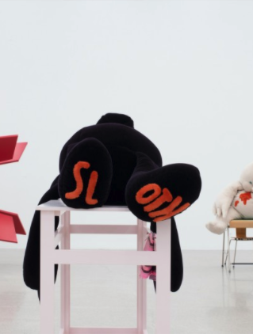
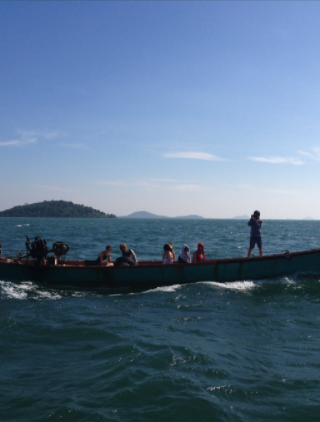
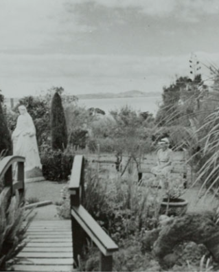
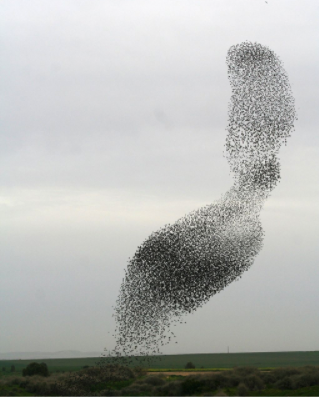

Tools for Slowing Down
Chioe Geoghegen & Chioe Reith

The (Old) New Spirit of Curating and Myths of Nomadism
Tim Gentles

Pressing Singularities
Tendai John Mutamnu & Robyn Maree Pickens
We're in This Together
Vera Mey
The Curatorial as a Liveable Subject Position: Hospitality and
Differential Consciousness
Danny Butt
Community, Community Art, Community Art in Howick
Balamohan Shigade

Feeling Welcome?
Louisa Afoa & Loana Gordon Smith

On Friendship
Rebecca Boswell